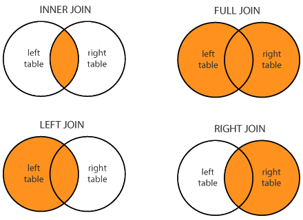
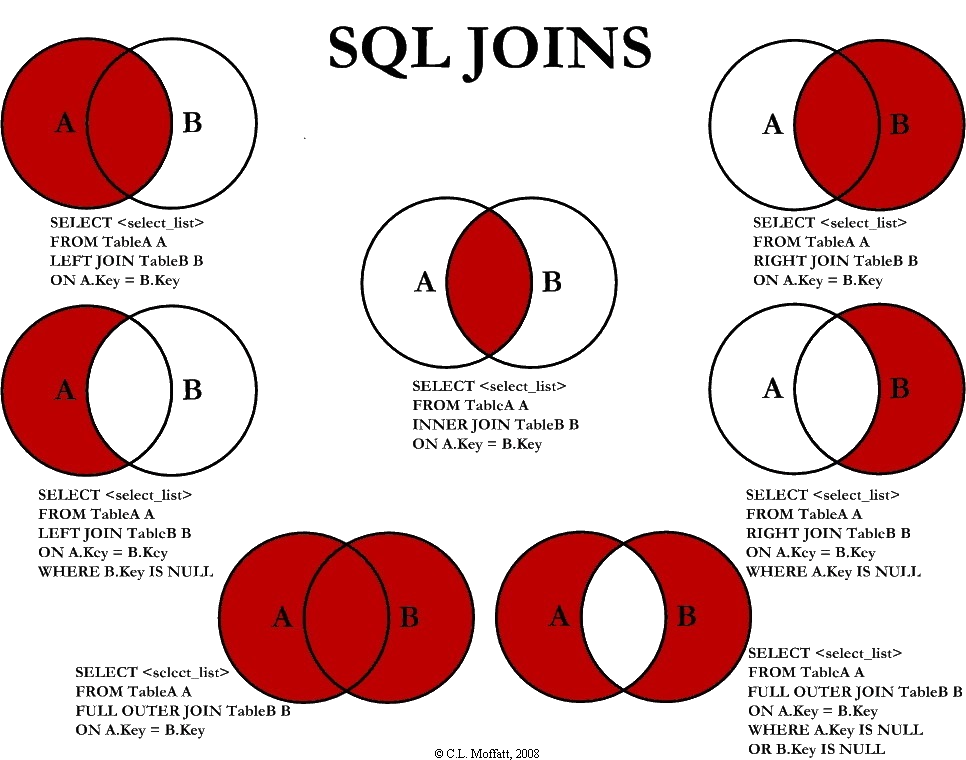

SQL Join Types
In SQL, we can perform what's called a join, where we query rows from two different tables at once.
There are several types of joins we may perform on two different tables.
The most commonly known ones are listed below.
- INNER JOIN: Returns records with matching value(s) from both tables.
- LEFT JOIN: Returns all records from the left table, and all matching records from the right table.
- RIGHT JOIN: Returns all records from the right table, and all matching records from the left table.
- OUTER (FULL) JOIN: Returns all records from both tables.
A diagram showing these different join types is displayed below.

